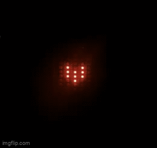

I've used programmable LEDs in the past to do things like looping rainbows or turning on specific pixels at different times for cool lighting effects, when I realized that these LED strips were basically just pixels which can be programmed to create a low-resolution display, kind of how the warning signs in traffic look like.
Initial stages
I ordered two 16ft LED strips with 600 pixels in total and cut them into rows of 18 pixels, taped the strips on the table, and soldered the strips, paying mind to the correct input and output directions. To make sure I wasn't burning any connections, my intial testing method was to use an Arduino and a power supply to see if all of the pixels in a particular row could be addressed.
Calculations
The power supply supplied 5V to the LEDs and the Arduino was powered by my computer, but some quick calculations revealed that 600 pixels could draw up to 20A at full brightness, much more than either the power supply or Arduino could handle. Luckily, even 5% brightness was more than enough for this specific application, since anything brighter caused the colors to leak into each other.
Later testing
As new rows were soldered on to the display, I checked connectivity between the pixels with a multimeter, and only when I was sure the connections were good did I test turning them on with the Arduino. I monitored the current draw at each step, and even when all of the 516 pixels were connected, the maximum draw was around 1.35A, safely lower than the 2A limit for the power supply.
Soldering
Here is a close up of my soldering work :D
Knowing which pixels to address
Before I show you the cool part, we need to talk about this. Because of the nature of the LED strips and their i/o connections, arranging them in rows causes there to be a zig zag pattern, where the pixels are numbered left to right on one row and right to left on the next. Note how the pixel 1 starts on the left of row 1, and pixel 19 starts on the right of row 2 above row 1. This meant that I had to create a chart like the one above and manually color the appropriate pixels.
Animations
I also connected a battery pack that takes three 1.5V batteries, supplying 4.5V to the system, which was sufficient for a prototype and allowed me to use the display away from a power supply.
Arduino coding
The Arduino code was trivial: for each frame you come up with pixels groups for each color, but them in a list, and turn them all on at specified times.
Problem
As I tried animating this flower to sway side to side, I soon realized that ARDUINO DOES NOT HAVE ENOUGH MEMORY TO HOLD ALL THE FRAMES I NEED. Since I intended this display to act just as a computer display would, I was not satisfied with just showing static images, I wanted to be able to create minutes long animations, so I transitioned to a Raspberry Pi.
Raspberry Pi and roadblocks
Setting up the Raspberry Pi and installing the correct packages was a process, but once set up the programming is very similar to the Arduino. Using the Raspberry Pi came with a few issues. It rendered my battery pack obsolete because the Raspberry Pi requires a reliable 5V power source with 3A capability, which I didn't trust the 4.5 battery pack to do reliably long term.

Raspberry Pi and roadblocks pt2
Additionally, the Raspberry Pi works with 3.3V logic while the LED strips require 5V logic, so I needed to use a level shifter to be able to control the display using the Raspberry Pi.
Generating frames with Python
Once everything was working I got really excited to finally be able to make animations, but it was taking forever to come up with the pixels groups for each frame, so I wrote a Python program using Tkinter to streamline the process. The user could pick colors and select the corresponding pixels for that color. This allows you to quickly visualize what a frame could look like.
Generating frames with Python
After a frame is complete, the user can select 'Generate List' (the buttons are cut out from the picture displayed above), and all the colors and their corresponding pixels are displayed, along with a complete dictionary which the user can directly copy from this program and paste in the Raspberry Pi code to add the frame to the animation.
Generating frames with Python
After a frame is complete, the user can select 'Generate List' (the buttons are cut out from the picture displayed above), and all the colors and their corresponding pixels are displayed, along with a complete dictionary which the user can directly copy from this program and paste in the Raspberry Pi code to add the frame to the animation. This allows you to quickly make cute little animations like these :D
Applications
I am interested in the applications of a display like this. I've been looking into how PyTorch machine learning models can be deployed on a Raspberry Pi, and this display could be a cool extension to show the output of real-time models, such as a camera attached to the display that can identify different objects that come in front of it. The possibilities are endless!